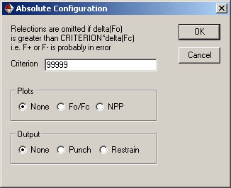
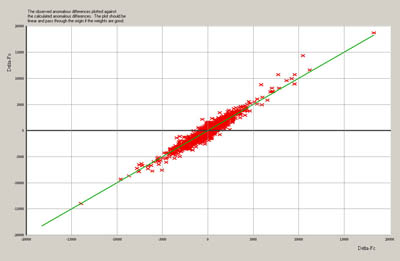

Analyse
Absolute Configuration. The Flack "x" parameter

See: H. D. Flack and G. Bernardinelli., J. Appl. Cryst. (2000). 33, 1143-1148.
CRYSTALS has two different refineable parameters to help with the
determination of absolute structure.
The oldest, the Rodger's "eta" parameter is a multiplier onto f", and
takes the value +1 if the model has the correct hand, and -1 if it needs
inverting. Flack showed that this parameter is unreliable as eta
approaches zero.
The Flack "x" parameter is the mixing term in
F^2 = (1-x)F^2+h + xF^2-h
and takes the value zero if the model has the correct hand, and +1 if it needs
inverting.
Either the Rodger's or Flack parameter should be refined simultaneously
with the other structural parameters since its value will influence
them, and they in turn will influence the s.u. on the absolute
configuration parameter.
Interpreting the Absolure Configuration Parameters
If the s.u. on the Flack parameter is greater than 0.30, the X-ray data
contain no significant anomalous information so that the absolute configuration
cannot be assigned by X-ray means. The value of x can be set to zero and not refined.
(It may be appropriate to report x and its s.u. to demonstrate that the
calculation was actually performed).
If the s.u. is small enough (<0.04), then the parameter itself can be evaluated.
If it falls close to zero or unity, then the absolute configuration has been determined.
If it falls within this range, but is significantly distant from the bounds,
the material is probably twinned by inversion.
Absolute Config
By defautlt, no plots are produced and no output is sent to the punch file
DFo/DFc plot
For a sample with strong anonalous differences, this should be a line of unit gradient, with little scatter. However, even if a clear trend is not evident, the absolute structure may be indicated by the refinement.

Normal Probability Plot
Normal probability plot of the residual, DF2o.
Text output
In addition to the graphs, a summary of textual output is sent to the screen. Full details are in the listing file (bfile#xx.lis). This can be viewed by going to the tab "Files" and selecting "View Listing". You may need to set your default file viewer to one which enables files to be accessed even while they are in use by other applications (eg MS Notepad)Plot Details
Floating origin in z direction
molecular weight, calculated density, absorption coefficient
(gm/cm**3) (cm-1)
From LIST 5 340.109 1.770 37.672
From LIST 29 340.109 1.770 37.672
Friedif = 1386.8 Estimated Friedel difference = 206.7876
f computed from scattering factors, including f-prime
Current Do-Dc R-factor (%)= 30.69
Plotting (Fo+ - Fo-) vs (Fc+ - Fc-)
Gradient for zero intercept = 1.038
Slope, intercept and Cc (R) of Fo/Fc Plot = 1.037 -78.70 0.96085
Computing normal probability plot for 1412 reflections.
Gradient for zero intercept = 0.873
Slope, intercept and Cc (R) of NPP Plot = 0.873 0.12 0.99921
The slope shoud be unity and the intercept zero
R = 100 * |DF2o - DF2c| / |DF2o|
Observed Friedif values much larger than the estimated Friedif values indicate that there is a good probability that the absolute structure can be reliably determined.
X and Y parameters
No of Reflections processed = 2877
No of Friedel Pairs found = 1412 No of Friedel Pairs used = 1412
No of Unpaired Reflections = 53
No of Centric Reflections = 0
Flack parameter obtained from original refinement
Hooft parameter obtained with Flack x set to zero
Reflections only used if /Fo+ - Fo-/ < 99999.00 * /Fc+ - Fc-/
Friedif = 1386.82 Acta A63, (2007), 257-265
Flack & Shmueli (2007) recommend a value >200
for general structures and >80 for enantiopure crystals
Flack Parameter & su -0.0073 0.0069
Hooft Parameter & su -0.0022 0.0047
Ton G & su 1.0043 0.0095
Distribution of Residuals
deltaF = F^2(+) - F^2(-)
Number +ve mean(deltaF) rms(deltaF) Number -ve mean(deltaF) rms(deltaF)
For Fo
663 1514.7964 2316.3726 749 -1515.3495 2128.7029
For Fc
714 1348.5111 2073.9597 698 -1406.4319 2031.7454
No of reflections for which delta(Fo) has same sign as delta(Fc)
Same sign Opposite sign
1223 189
Distribution of Delta(F^2)/n<F^2>
Delta Fo^2 31 25 43 54 110 153 220 222 202 116 87 61 36 23 29
Delta Fc^2 27 23 35 50 82 134 209 284 221 135 72 57 35 23 25
n -7 -6 -5 -4 -3 -2 -1 0 1 2 3 4 5 6 7
The number of reflections for which the residuals for Fo and Fc have the same sign should exceed the number with opposite sign.
The distribtion for Fo should be similar to that for Fc. For a poorly determined absolute structure, the Fo distribution is oftem much wider than the Fc distribution.
The Hooft et al probabilities
For an enantiopure material, there are 2 choices, P2
P2(correct) 1.0000 i.e. 0.100000E+01
If 50:50 twinning is possible, there are 3 choices, P3
P3(correct) 1.0000 i.e. 0.100000E+01
P3(rac-twin) 0.0000 i.e. 0.000000E+00
P3(inverse) 0.0000 i.e. 0.000000E+00
G 1.0043
G S.U. 0.0095
FLEQ -0.0022
FLEQ S.U. 0.0047 i.e. 0.472883E-02
ASCII File Output
Punch
H K L Fo+ Sig Fc+ Fo- Sig Fc- Do Dc Ao Ac Sig(Do)
-4 5 0 1 2 28762.53 706.45 29264.90 35556.04 701.30 35820.63 -6793.51 -6555.73 32159.28 32542.77 995.44
-1 5 0-1 16160.01 302.59 16617.79
-3 6 0 1 2 11109.57 313.61 11413.68 10339.38 196.65 10643.96 770.19 769.71 10724.47 11028.82 370.17
0 6 0 1 2 24984.76 493.82 25424.93 25433.55 616.86 25585.65 -448.79 -160.71 25209.16 25505.29 790.17
-5 7 0 1 2 11172.38 314.49 11542.74 14592.49 287.54 15679.00 -3420.11 -4136.27 12882.43 13610.87 426.13
Restrain
REM Restraint created if abs(Do-Dc) < 3.00 sigma(Ao)
REM Flack parameter = -0.0073 Pre-flack = 1.0145
REM Delata Fo Sigma Delta Fc h k l DFo-Dfc/sig
restrain -6793.51, 995.4366 = - ( 1. - ( 2. * enantio ) ) * 6555.73 -4 5 0 0.239 0.022
restrain 770.19, 370.1651 = + ( 1. - ( 2. * enantio ) ) * 769.71 -3 6 0 0.001 -0.014
...
...
restrain 707.42, 788.7247 = + ( 1. - ( 2. * enantio ) ) * 871.21 -1 4 16 0.208 -0.203
restrain -298.93, 986.2073 = + ( 1. - ( 2. * enantio ) ) * 178.23 -3 5 16 0.484 -2.692
restrain 379.23, 1072.7726 = + ( 1. - ( 2. * enantio ) ) * 81.52 0 5 16 0.278 3.638
REM 1410 restraints written out
REM restraints R-factor(%) = 30.62
The columns headed :
h k l DFo-Dfc/sig
To make use of this file, include
#USE flack-restraint.pch in your LIST 16.The column headed Sigma is the su of delta(F2. We suspect somone might find a better "su" to use for the restraints.